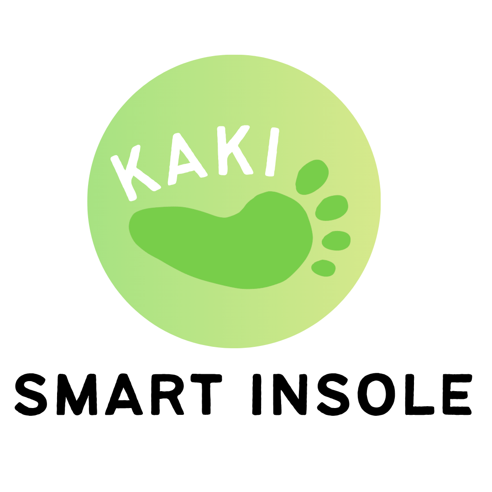
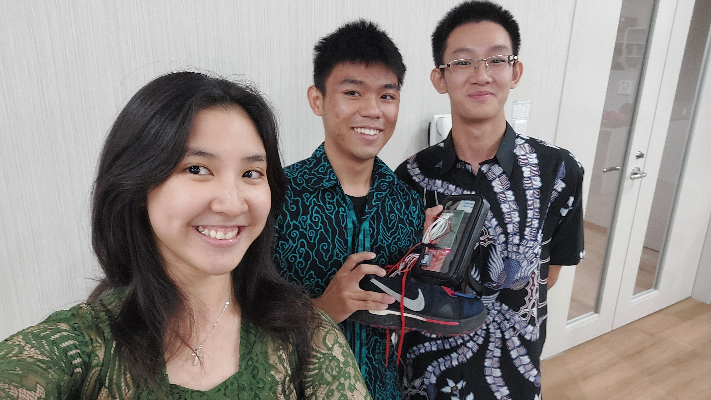
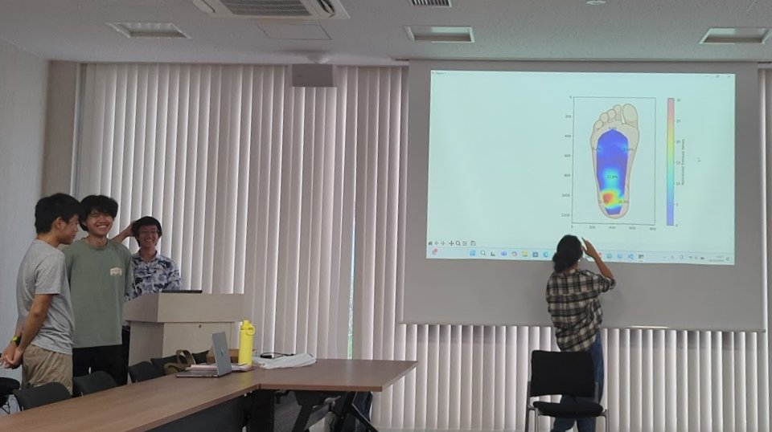
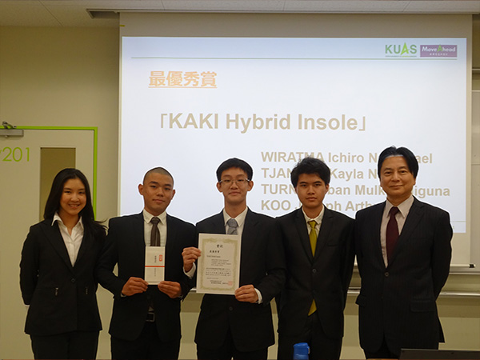
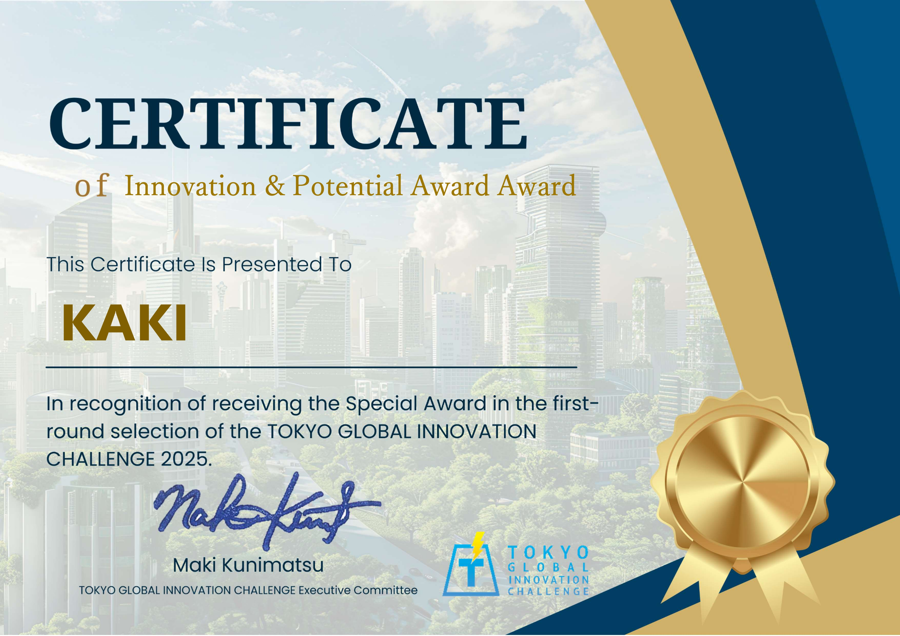
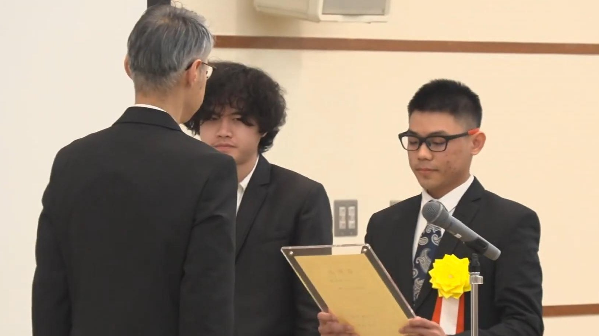
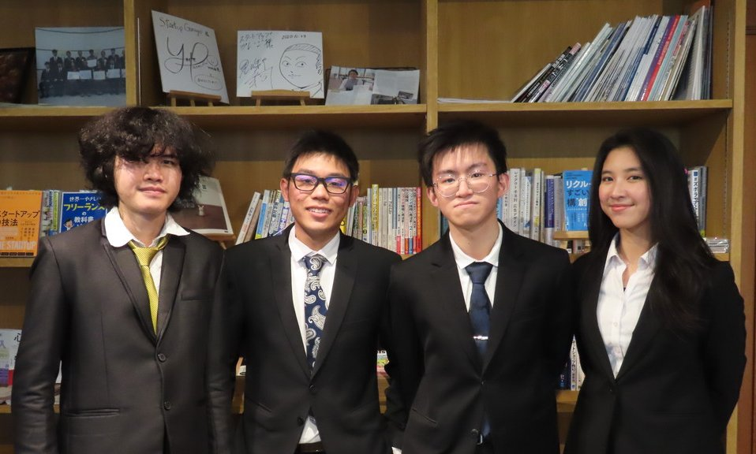
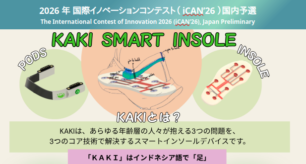

Sportswatches Limitations スポーツウォッチの限界
While sportswatches detect various activities, they lack precision in foot-related metrics, leaving a blind spot in performance tracking. スポーツウォッチは様々なアクティビティを検出しますが、足に関連する指標の精度に欠けており、パフォーマンストラッキングに死角を残しています。

KAKI Smart Insole カキスマートインソールWhile sportswatches detect various activities, they lack precision in foot-related metrics, leaving a blind spot in performance tracking. スポーツウォッチは様々なアクティビティを検出しますが、足に関連する指標の精度に欠けており、パフォーマンストラッキングに死角を残しています。
Current solutions on the market capture foot pressure distribution, but their implementation is strictly limited to running and golf. 市場にある現在のソリューションは足底圧分布を捉えますが、その実装はランニングやゴルフに厳しく制限されています。
No single device combines versatility and foot precision. KAKI solves this by tracking dynamic movements across all sports and daily life. 汎用性と足の精度を兼ね備えた単一のデバイスはありません。KAKIは、あらゆるスポーツや日常生活の動的な動きを追跡することでこれを解決します。
Driven by continuous innovation, our engineering team has developed proprietary hardware and algorithms striving for maximum accuracy: 継続的なイノベーションに推進され、私たちのエンジニアリングチームは最大限の精度を確保するために独自のハードウェアとアルゴリズムを開発しました：
Original 3D printed sensors undergoing rigorous durability and repeatability testing. 厳格な耐久性と再現性テストを受けた、オリジナルの3Dプリントセンサー。
Integrating one of the latest barometer sensor with implemented filters to detect even small incremental changes. わずかな変化も検出するための適切なフィルターを実装した新しい気圧センサーの統合。
Discovery and successful implementation of the Zero Velocity Update (ZUPT) concept for ultra-precise insole tracking. 超高精度なインソールトラッキングのためのZUPT（ゼロ速度更新）概念の発見と実装。

Originally an ID2 class project designed to track foot pressure distribution.
元々は足底圧分布を追跡するために設計されたID2のクラスプロジェクトでした。
Original Members: WIRATMA Ichiro Nathanael, TJANDRA Kayla Narina, KOO Joseph Arthur
初期メンバー：WIRATMA Ichiro Nathanael, TJANDRA Kayla Narina, KOO Joseph Arthur

To continue developing this project we proposed this as a Cornerstone Project and pitched it to Professors.
本プロジェクトの開発を継続するため、キャップストーンプロジェクト（Cornerstone Project）として教授陣に提案し、採択されました。
Members: WIRATMA Ichiro Nathanael, TJANDRA Kayla Narina, KOO Joseph Arthur, TURNIP Alban Mulky Adiguna
メンバー：WIRATMA Ichiro Nathanael, TJANDRA Kayla Narina, KOO Joseph Arthur, TURNIP Alban Mulky Adiguna

Joined the KUAS Business Plan 2024, driving product redefinition to stand out from competitors.
KUASビジネスプラン2024に参加し、競合他社との差別化を図るため製品の再定義を行いました。
Members: WIRATMA Ichiro Nathanael, TJANDRA Kayla Narina, KOO Joseph Arthur, TURNIP Alban Mulky Adiguna
メンバー：WIRATMA Ichiro Nathanael, TJANDRA Kayla Narina, KOO Joseph Arthur, TURNIP Alban Mulky Adiguna

Received the Innovation & Potential Award at the Tokyo Global Innovation Challenge 2025.
Tokyo Global Innovation Challenge 2025にて「イノベーション＆ポテンシャル賞」を受賞。
Official Website
Members: WIRATMA Ichiro Nathanael, TJANDRA Kayla Narina, TURNIP Alban Mulky Adiguna, SANTOSO Jonathan Richard
メンバー：WIRATMA Ichiro Nathanael, TJANDRA Kayla Narina, TURNIP Alban Mulky Adiguna, SANTOSO Jonathan Richard


Received the Special Award (Tokubetsu-sho) at the 25th Higashimikawa Business Plan Contest.
第25回東三河ビジネスプランコンテストにて「特別賞」を受賞。
Watch on YouTube
Members: WIRATMA Ichiro Nathanael, TJANDRA Kayla Narina, TURNIP Alban Mulky Adiguna, SANTOSO Jonathan Richard
メンバー：WIRATMA Ichiro Nathanael, TJANDRA Kayla Narina, TURNIP Alban Mulky Adiguna, SANTOSO Jonathan Richard

Advancing to the Final Stage of the International Contest of Innovation (iCAN) on April 26, 2026, in Sendai.
2026年4月26日に仙台で開催される国際イノベーションコンテスト（iCAN）のファイナルステージに進出。
Members: WIRATMA Ichiro Nathanael, TJANDRA Kayla Narina, TURNIP Alban Mulky Adiguna, SANTOSO Jonathan Richard, SAKAGUCHI Yoshinari
メンバー：WIRATMA Ichiro Nathanael, TJANDRA Kayla Narina, TURNIP Alban Mulky Adiguna, SANTOSO Jonathan Richard, SAKAGUCHI Yoshinari